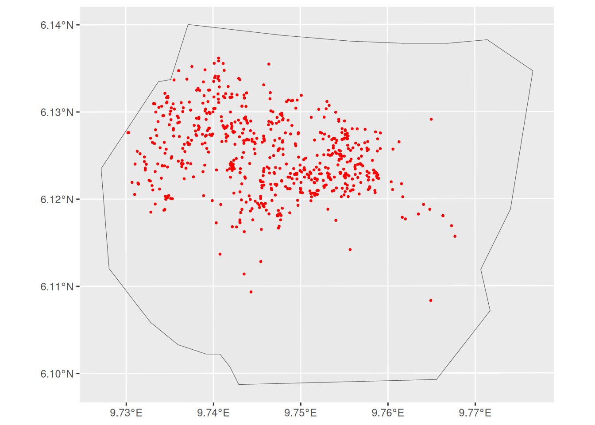
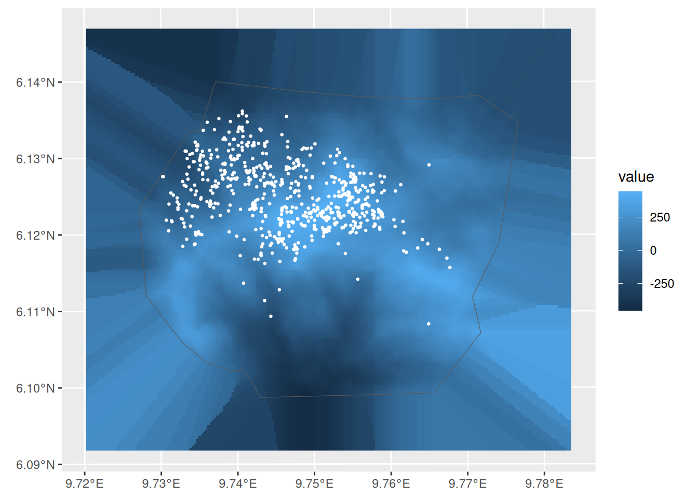
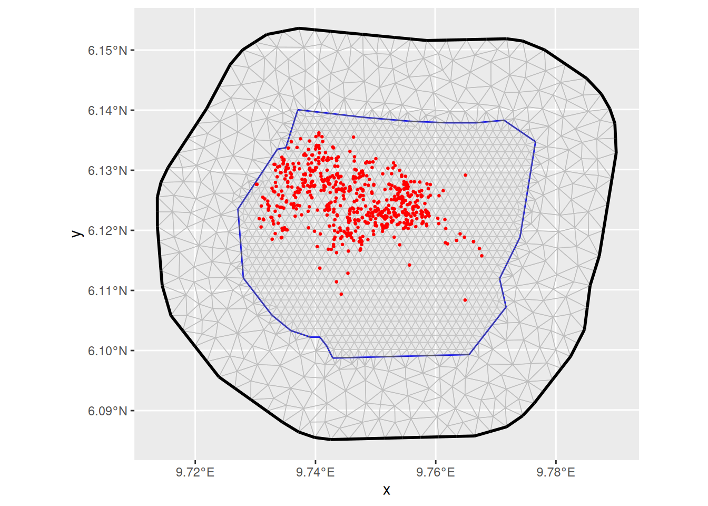
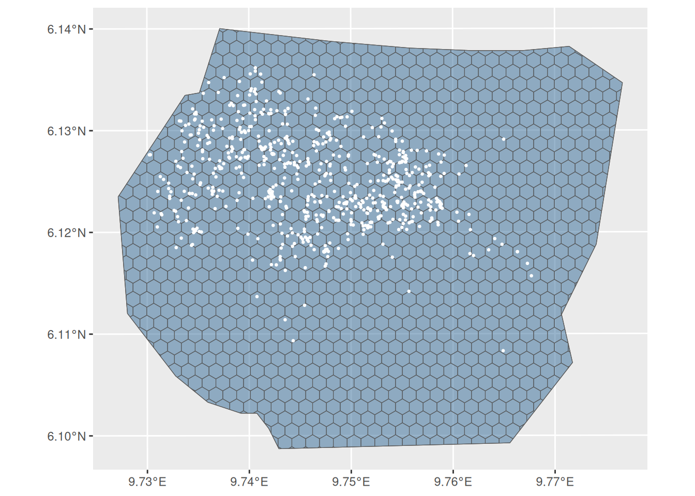
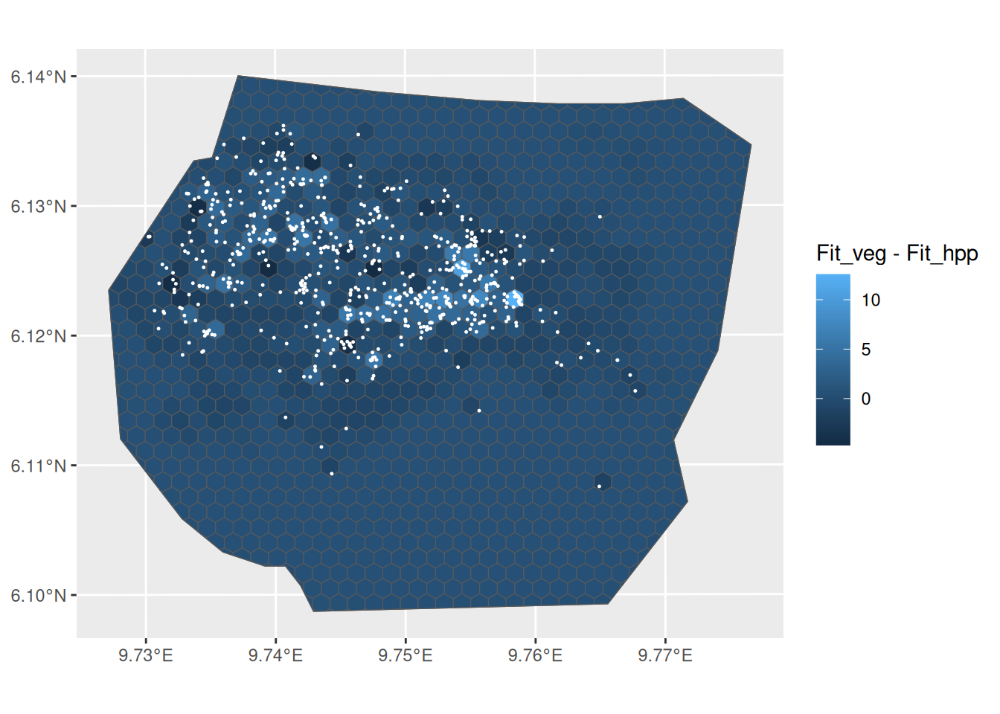
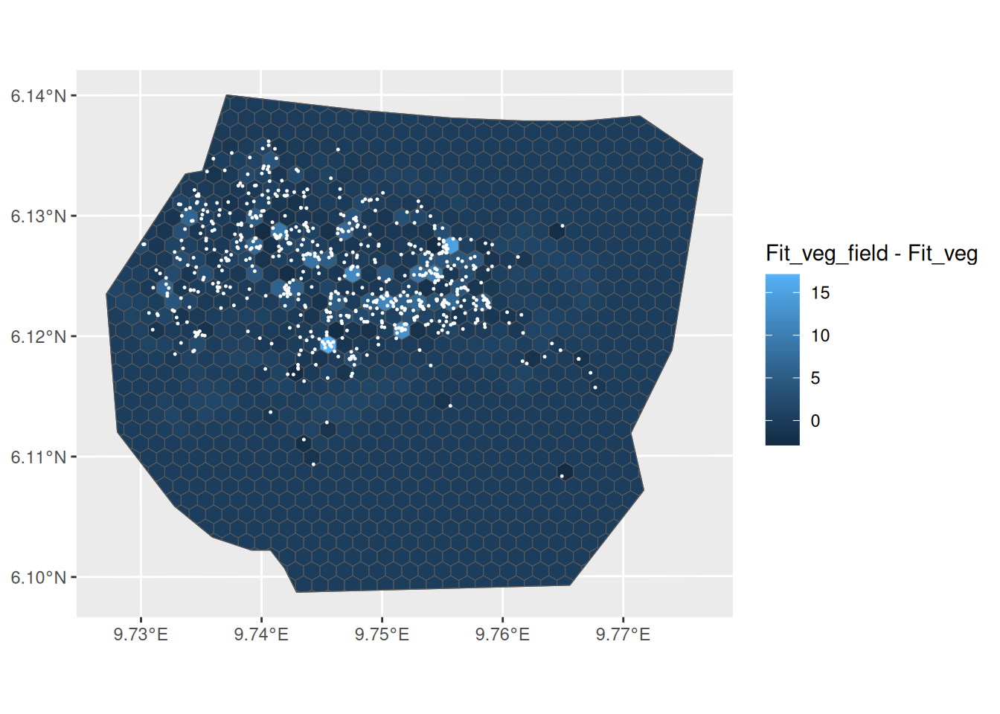
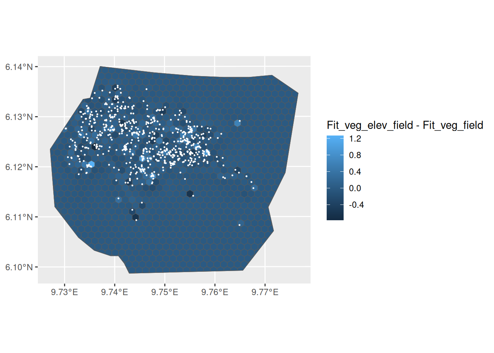
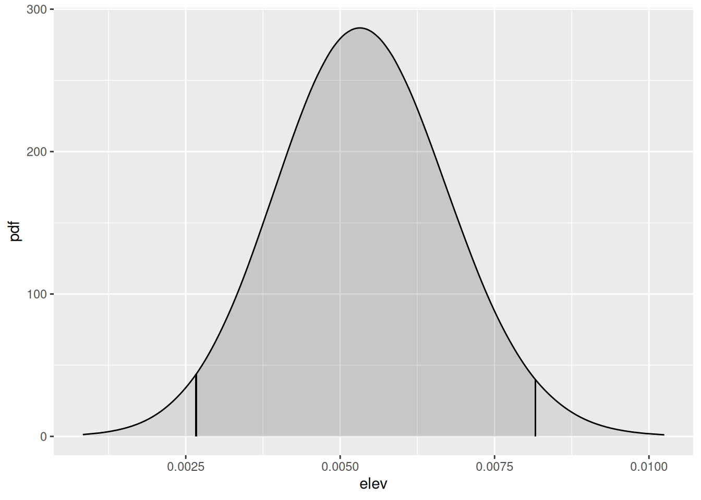

LGCPs - Model comparison using Cross Validation
David Borchers, Finn Lindgren and Hans Montcho
Generated on 2026-07-27
Source:vignettes/articles/2d_lgcp_covars_gcpo.Rmd
2d_lgcp_covars_gcpo.RmdSet things up
library(INLA)
library(inlabru)
library(fmesher)
library(RColorBrewer)
library(ggplot2)
library(patchwork)Introduction
We are going to fit some spatial models to the gorilla data, and compare them using cross validation. For illustration, we consider the same models from the vignette on spatial covariates, and we only focus on the practical aspects of LGCPs comparison. More specifically, we consider the following models:
| Models | Components |
|---|---|
Fit_hpp |
Intercept ( a homogeneous PP) |
Fit_veg |
Intercept and factor covariate vegetation
|
Fit_field |
Intercept and a spatial SPDE field
|
Fit_veg_field |
Intercept, vegetation and the
SPDE field
|
Fit_veg_elev_field |
Intercept, vegetation, elevation, and the
SPDE field
|
Leave-Region-Out Cross Validation
In point pattern analysis, the available information comes from events locations and empty regions, and this should be taken into consideration for models comparison. Here, we use a leave-region-out cross validation approach, in which the domain is partitioned into subregions, and the model is used the predict the likelihood contribution from holdout subregions.
Let Y be a LGCP with intensity \lambda(.) defined on a bounded domain \Omega, and we observe a point pattern \mathbf{y} = (y_1,\cdots, y_n). Then the log likelihood is defined as
\ell(\lambda(.);\mathbf{y}, \Omega) = |\Omega| - \int_{\Omega}\lambda(s)ds + \sum_{y_i \in \mathbf{y}\cap\Omega } \ln \lambda(y_i).
Now, if we consider a partition \Omega = \Cup_{j=1}^J B_j of the domain; we can split the log likelihood into regional log likelihood contributions as \ell(\lambda(.);\mathbf{y}, \Omega) = \sum_{j=1}^J \ell_j(\lambda(.);\mathbf{y}, B_j), where
\ell_j(\lambda(.);\mathbf{y}, B_j) = |B_j| - \int_{B_j}\lambda(s)ds + \sum_{y_i \in \mathbf{y}\cap B_j } \ln \lambda(y_i), and we note that, this representation is not equivalent to the aggregated count or grid approach.
To fit the model, we use the complete information from \ell(\lambda(.);\mathbf{y}, \Omega). For model comparison, however, the likelihood contribution, \ell_j(\lambda(.);\mathbf{y}, B_j) from each B_j, is left out and after fitting the model, we evaluate its predictive performance on the holdout subregion using the logarithmic scoring rule.
The aggregated Group Conditional Predictive Ordinate (GCPO) is defined as the sum of the logarithm of the joint leave-region-out predictive distribution
\text{GCPO} = \sum_{j=1}^J \log \pi(\mathbf{y}_{B_j} | \mathbf{y}_{-B_j}) where we define
\pi(\mathbf{y}_{B_j} | \mathbf{y}_{-B_j}) = \int_{B_j}\exp(\ell_j(\lambda(.);\mathbf{y}, B_j)) \pi(\lambda(s)|\mathbf{y}, \Omega\setminus B_j)) ds.
In principle, the model should be refitted J times, however, a fast and accurate
approximation to the leave-region-out predictive distribution,
accessible via the control.gcpo argument, allows us to
compute the approximate GCPO score from a single model fit using the
complete point pattern.
Get the data
data(gorillas_sf, package = "inlabru")This dataset is a list (see help(gorillas_sf) for
details. Extract the objects you need from the list, for
convenience:
nests <- gorillas_sf$nests
mesh <- gorillas_sf$mesh
boundary <- gorillas_sf$boundary
gcov <- gorillas_sf_gcov()
ggplot() +
gg(boundary, alpha = 0.2) +
gg(nests, color = "red", cex = 0.5)
Covariates: vegetation and elevation
Let’s take a look at the vegetation type, nests and boundary:

Also, let’s do the same for elevation:
elev <- gcov$elevation
elev <- elev - mean(terra::values(elev), na.rm = TRUE)
ggplot() +
gg(elev, geom = "tile") +
gg(boundary, alpha = 0) +
gg(nests, color = "white", cex = 0.5)
For the spatial component, we use a SPDE type smoother, with the mesh, boundary and nests illustrated below:

The models
Defining the models
Below, we prepare the formulas for the models under consideration.
# fit_hpp
comp_hpp <- geometry ~ Intercept(1)
# fit_veg
comp_veg <- geometry ~ -1 +
vegetation(gcov$vegetation, model = "factor_full")
# fit_field
pcmatern <- inla.spde2.pcmatern(mesh,
prior.sigma = c(1, 0.01),
prior.range = c(0.1, 0.01)
)
comp_field <- geometry ~ Intercept(1) +
field(geometry, model = pcmatern)
# fit_veg_field
comp_veg_field <- geometry ~
-1 +
vegetation(gcov$vegetation, model = "factor_full") +
field(geometry, model = pcmatern)
# fit_veg_elev_field
comp_veg_elev_field <- geometry ~
-1 +
vegetation(gcov$vegetation, model = "factor_full") +
elev(elev, model = "linear") +
field(geometry, model = pcmatern)A hexagonal partition for cross validation
To enable the block or regional group.cv calculations,
we need to split the domain into spatial regions, and compute the
association of each observed point to these subregions. The
cv_hex function allows to create hexagonal partitions, but
if meaningful subregions of interest are available, these must be
used to define the likelihood contribution.
cvpart <- cv_hex(boundary, cellsize = 0.15, n_group = 1)
ggplot() +
gg(cvpart, aes(fill = group), alpha = 0.5) +
gg(boundary, alpha = 0) +
gg(nests, color = "white", cex = 0.5) +
theme(legend.position = "none")
It is important check that every event belongs to a region, to ensure the regional likelihood contribution is properly calculated:
Fitting the models
Fit the models as usual, and increase the integration scheme
resolution to better match the covariate. In the code below,
enable = TRUE for control.gcpo tells
INLA that the GCPO must be calculated,
type.cv = "joint" ensures that we are doing a joint
prediction for the entire region. For speed, we set
control.compute(config=FALSE) to compute the
group.cv score conditional on posterior mode of the
hyperparameters.
mesh_int <- mesh
# mesh_int <- fm_subdivide(mesh, 2)The homogeneous model
fit_hpp <- lgcp(
comp_hpp,
nests,
samplers = cvpart,
domain = list(geometry = mesh_int),
control.gcpo = list(enable = TRUE, type.cv = "joint"),
options = list(control.compute(config = FALSE))
)Accounting for vegetation
fit_veg <- lgcp(
comp_veg,
nests,
samplers = cvpart,
domain = list(geometry = mesh_int),
control.gcpo = list(enable = TRUE, type.cv = "joint"),
options = list(control.compute(config = FALSE))
)Accounting for the spatial dependence with the
SPDE smoother
fit_field <- lgcp(
comp_field,
nests,
samplers = cvpart,
domain = list(geometry = mesh_int),
control.gcpo = list(enable = TRUE, type.cv = "joint"),
options = list(control.compute(config = FALSE))
)Accounting for vegetation and spatial dependence with
the SPDE smoother
fit_veg_field <- lgcp(
comp_veg_field,
nests,
samplers = cvpart,
domain = list(geometry = mesh_int),
control.gcpo = list(enable = TRUE, type.cv = "joint"),
options = list(control.compute(config = FALSE))
)The last model which accounts for elevation,
vegetation and spatial dependence with the
SPDE smoother
fit_veg_elev_field <- lgcp(
comp_veg_elev_field,
nests,
samplers = cvpart,
domain = list(geometry = mesh_int),
control.gcpo = list(enable = TRUE, type.cv = "joint"),
options = list(control.compute(config = FALSE))
)Comparing the models with group CV
There are mainly two functions bru_block_gcpo and
bru_gcpo_table for models comparison using cross
validation. bru_block_gcpo is used to access individual
scores for a single model, and its output is a list containing
the index for each region and the corresponding CV score. On the other
hand, bru_gcpo_table is used for multiple models
comparison.
gcpo_hpp <- bru_block_gcpo(fit_hpp)
str(gcpo_hpp)
#> List of 2
#> $ blocks:List of 1
#> ..$ lhood1: int [1:1088] 402 227 313 296 423 351 527 631 545 492 ...
#> $ gcpo : num [1:1088] 5.90e+05 2.06e+13 6.17e+08 6.17e+08 6.17e+08 ...From the table below, the vegetation covariate is a
strong predictor, as expected, but also the SPDE smoother.
Including elevation in the model already containing
vegetation and the SPDE smoother does not
provide any considerable gain in terms of predictive score. These
conclusions are similar to the ones obtained from the vignette
on spatial covariates, although the latter was mainly based on
in-sample analysis.
gcpo_df <- bru_gcpo_table(
list(
Fit_hpp = fit_hpp,
Fit_veg = fit_veg,
Fit_field = fit_field,
Fit_veg_field = fit_veg_field,
Fit_veg_elev_field = fit_veg_elev_field
)
)
gcpo_df[, -1] <- log(gcpo_df[, -1])
knitr::kable(tibble::tibble(
Models = names(gcpo_df)[-1],
GCPO = colSums(gcpo_df[, -1])
))| Models | GCPO |
|---|---|
| Fit_hpp | 1603.908 |
| Fit_veg | 1969.970 |
| Fit_field | 2396.564 |
| Fit_veg_field | 2407.937 |
| Fit_veg_elev_field | 2413.298 |
Plotting regional scores
A valuable feature of the regional CV approach, is to assess regions
where models might provide better fits or to detect some missing
covariate. As an illustration, by evaluating the difference in the log
predictive density per region between models Fit_veg and
Fit_hpp, we can see that including vegetation
improves the prediction in regions with high number of nests, which was
expected, since most of the nests falls in the primary vegetation
type.
names(gcpo_df)[1] <- "block_ID"
gcpo_block_ID <- cvpart |> dplyr::left_join(gcpo_df, "block_ID")
ggplot() +
gg(gcpo_block_ID, aes(fill = Fit_veg - Fit_hpp), alpha = 1) +
gg(boundary, alpha = 0) +
gg(nests, color = "white", cex = 0.2)
A similar analysis could be done to assess the gain from the
SPDE smoother when added to the model with
vegetation. Indeed, most of the subregions with increased
GCPO are nearby regions, probably as a result of the spatial
component.
ggplot() +
gg(gcpo_block_ID, aes(fill = Fit_veg_field - Fit_veg), alpha = 1) +
gg(boundary, alpha = 0) +
gg(nests, color = "white", cex = 0.2)
We can also look at the contribution from the elevation
covariate, which slightly increased the log score in few subregions, but
overall, it seems to not be relevant.
plt_gcpo_elev <- ggplot() +
gg(gcpo_block_ID, aes(fill = Fit_veg_elev_field - Fit_veg_field),
alpha = 1
) +
gg(boundary, alpha = 0) +
gg(nests, color = "white", cex = 0.2)
plt_gcpo_elev
The elevation covariate not being predictively relevant,
in the presence of the vegetation covariate and the
SPDE smoother, was also expected from its posterior
distribution.
plt_post_elev <- plot(fit_veg_elev_field, "elev")
plt_post_elev
Summary
Based on the previous analysis, we would select the model containing
vegetation and the SPDE smoother. Here, we use
hexagonal partition, but we could also compare the models over different
regions size or geometry to add some robustness to the selection
procedure. However, the approximation strategy to avoid model refits and
compute the GCPOs might become less accurate for regions that are too
large. In the case of very few but large regions, we recommend refitting
the model.
Also, it is important to note the small difference in the GCPOs between some of the models, making model selection less straightforward. This illustrates the need for uncertainty quantification, that we are currently investigating.